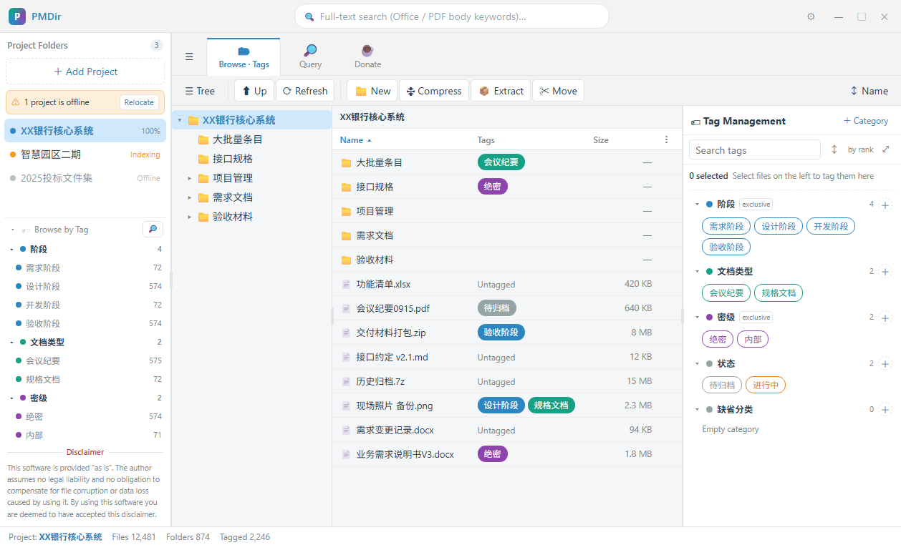
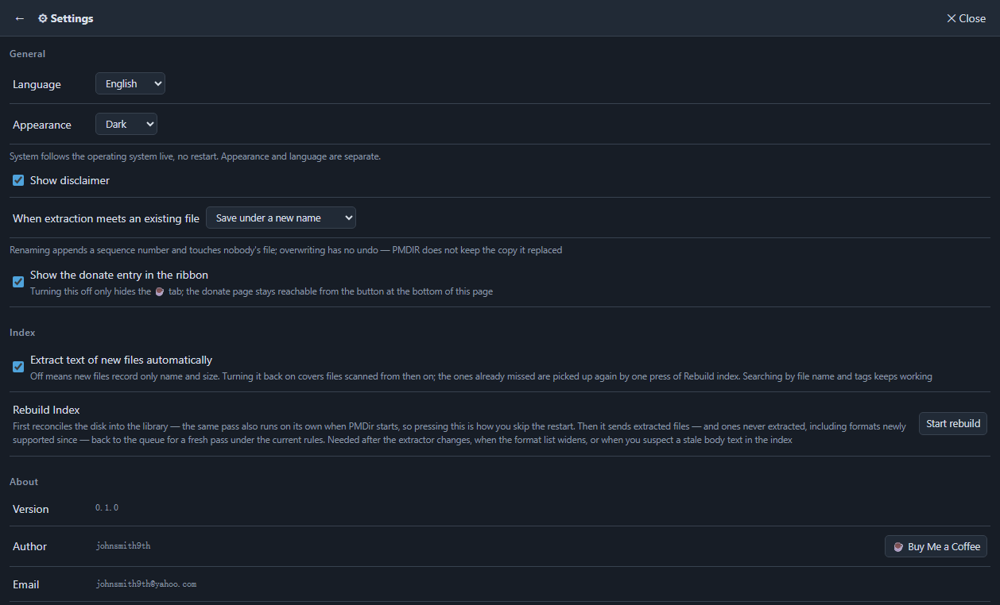
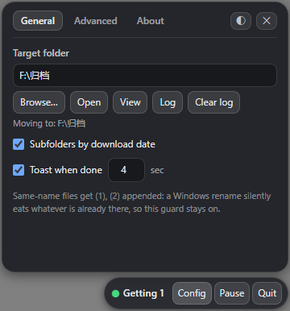
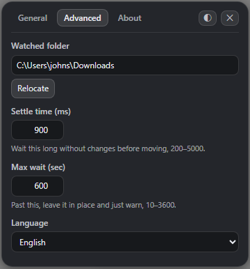

johnsmith9th
One keeps a project folder findable: it puts your own taxonomy on local files, then searches inside the text of Office and PDF documents. The other files finished downloads into an archive folder. Both run locally — no account, no sign-in, nothing uploaded.

Product 01
Register the project folders you already have, lay a tag scheme of your own over the file tree, turn tag conditions into queries, and go straight to the text inside Office and PDF documents. Entirely offline: no network, no collection, no upload.
The "Indexed N%" figure is honest: it counts how many files have had their text extracted, not the health of the index. When the index layer could not be opened, it reads "Index —".



Product 02
A 236 × 40 bar keeps an eye on your Downloads folder. When a file has finished downloading, it moves that file into an archive folder you choose, optionally into a subfolder named after the download date. It is not a download manager, and it does not speed anything up.
.crdownload .part
.download .partial .tmp
.idmdownload .__partialdownload, ~$*),
a size greater than zero, and not being part of the baseline that already
existed at startup.
(1) and
(2) are appended, up to 999 — a Windows rename silently eats the
target if it already exists.
pending.jsonl ledger
and a pure-function replay table re-adopt half-finished moves on the next launch.
\Windows, and Program Files.
What it does not do: it has no download engine — no acceleration, no BT, no ED2K — no resume for interrupted downloads, no browser extension, no plugin system, no system tray icon, and no installer or auto-update: the release is a portable zip you unzip and run.


Both apps are free and have no feature limits. Download2 v0.1.0 is ready to download — a portable zip you unzip and run. PMDir is still being packaged and verified, so its line on the download page states the status rather than linking to nothing.
These are my own tools (johnsmith9th). PMDir is for me — and for anyone else who keeps a project folder full of hundreds of documents, plus the folders and tags needed to keep track of them.
Email: johnsmith9th@yahoo.com
This is the only way to reach me: no phone number, no live chat, no forum. I read everything that arrives.
This site and every page on it are plain static HTML: no scripts, no cookies, no analytics, and no remote fonts, images, or scripts. The screenshots and icons on these pages are local files shipped with the site — downloaded and cached along with it.